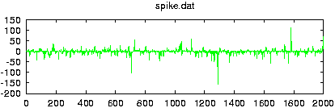
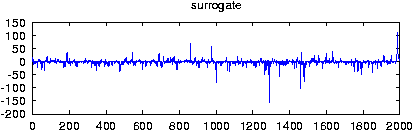

Reads data from a file and creates surrogate data with the same Fourier amplitudes and the same distribution of values. If more than one columns are specified by either giving their number with -m or a comma seperated list with -c, multivariate surrogates are prepared. In that case, also the relative Fourier phases of the channels are matched to those of the data. Since for finite length, distribution and spectral properties cannot be guaranteed exactly at the same time, the default output contains the iteration stage with the exact amplitudes. With the option -S set, the stage with the exact spectrum (resp. relative phases) is given. Asymptotically, the difference between both should converge to zero.
-n number of surrogates (1)
-i number of iterations (until no change)
-S make spectrum exact rather than distribution
-I seed for random numbers
-o output file name, just -o means file_surr(_nnn)
-l number of points (whole file)
-x number of values to be skipped (0)
-m number of columns to be read (1)
-c columns to be read (1)
-V verbosity level (0 = only fatal errors)
-h show usage messageverbosity level (add what you want):
1 = input/output
2 = print # of iterations / discrepancy
The setting -i0 yields a random permutation, or, if the option -S set, an unrescaled FFT surrogate. The setting -i1 yields a surrogate that is close to the result of the AAFT procedure, but not quite the same.
Surrogates are written to stdout by default. With the -o option to file_surr_n, n=1...number. For each surrogate, the iteration count and the rms discrepancy between the exact spectrum and exact amplitude stages (normalised to the rms amplitude of the data) are printed.
Note: The length of the sequence will be truncated to the largest sub-sequence factorizable with factors 2,3, and 5. This is necessary in order to use an efficient FFT.
Note: It is advisable to select a suitable sub-sequence to minimize end effects by using endtoend before preparing surrogates. By no means should the data be zero-padded.
Note: Successive identical calls to this routine will always yield the same surrogates, since "random" numbers on a computer are deterministic. It is, however, possible to set the seed of the random number generator explicitly by using the option -I , so that calls with different seeds yield different surogates.
See also the page on nonlinearity testing.
This routine is based on
T. Schreiber and A. Schmitz
Improved surrogate data for nonlinearity tests
Phys. Rev. Lett. 77, 635 (1996).
gnuplot> plot 'spike.dat' gnuplot> plot '< surrogates spike.dat'

